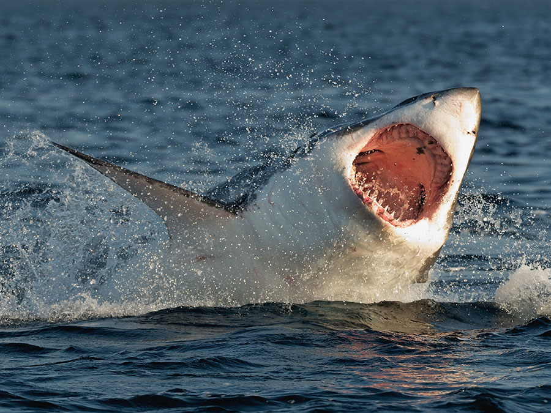

California's “Red Triangle” is the site of over 1/3 of great white shark attacks.
The danger zone begins around Bodega Bay and extends south about 50 miles west of San Fransisco.
The triangle juts out beyond the Farallon Islands and down to Big Sur south of Monterey.
9 attacks per year in the 1950s to 1.5 attacks per year in the last decade of the study.
In that time there were 13 recorded shark fatalities in California and only one near the San Francisco Bay.

read more